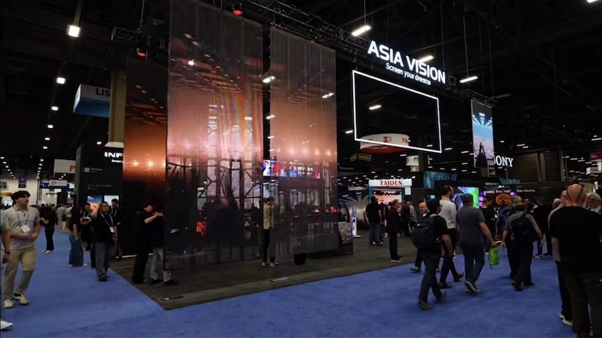

An LED display is an electrical product that will be installed in a public building, and every major market regulates it accordingly. Certification is the evidence that a screen meets the safety, electromagnetic, and materials rules of the destination country. Without it, a shipment can be refused at customs, a contractor can be barred from energising the installation, and an insurer can decline a claim after a fire.
Buyers often treat certification as paperwork to be resolved by the supplier at the last moment. In practice it is a design constraint that reaches back into the product. The choice of driver, the mains input filter, the printed circuit board layout, the plastics used in the cabinet, and the labelling on the rear panel all follow from the compliance target. A screen designed for one market does not automatically pass in another, and re-engineering after the fact is slow and expensive.
The certification landscape splits into three tiers that buyers regularly confuse. There are mandatory legal marks, such as the CE marking that allows a product onto the European market and the UKCA marking for Great Britain. There are safety listings that a specific authority or client requires, such as UL or ETL in North America. And there are voluntary or sector schemes that a tender may name even though the law does not demand them. Knowing which tier applies to a given order prevents both over-certifying and being caught short at the port.
This guide explains the main certifications an LED display buyer will encounter, what each one actually covers, which documents should travel with a shipment, and the failure modes that most often delay a consignment at the border.
CE marking is the European Union declaration that a product meets the applicable directives. For LED displays the relevant ones are typically the Low Voltage Directive, the Electromagnetic Compatibility Directive, and the Radio Equipment Directive where wireless control is present, together with the RoHS Directive restricting hazardous substances. CE is a self-declaration supported by test reports from an accredited laboratory, which means the quality of the technical file is everything.
RoHS is often discussed as if it were separate from CE, but for the European market it is one of the directives the CE marking covers. It restricts lead, mercury, cadmium, hexavalent chromium, and certain flame retardants in electrical equipment. For LED displays the practical pressure points are the solder alloy, the plastics in connectors and housings, and the coatings on cables. A supplier that cannot produce a RoHS test report broken down by material is a supplier that cannot defend the claim under scrutiny.
FCC rules govern electromagnetic interference for equipment sold in the United States. Displays are usually treated as unintentional radiators, which places them in Part 15 Subpart B. The screen must not emit interference above the limit and must tolerate a reasonable level of incoming interference. Because an LED wall is a large array of switching drivers, this is a genuine engineering exercise rather than a formality, and the test is performed on a representative configuration rather than an idealised single cabinet.
UL and ETL are safety listings rather than legal marks. In North America, local electrical codes and inspectors often require a listed product, and a listing from a recognised national testing laboratory satisfies that demand. UL develops the standard and ETL, operated by Intertek, tests to the same standard, so either can be acceptable depending on the authority having jurisdiction. This is the certification tier that most often surprises first-time importers.
UKCA is the mark for Great Britain following the country's departure from the European Union. It mirrors the CE requirements closely, and for many products the same test evidence can support both marks, but the declaration and the labelling must be handled correctly. Northern Ireland follows a different arrangement again. Buyers shipping to the United Kingdom should confirm which marking the customer's authority will accept rather than assuming CE is sufficient on its own.
| Mark | Market | Type | Typical Scope for LED Displays |
|---|---|---|---|
| CE | European Union | Mandatory legal mark | Low Voltage, EMC, Radio, RoHS directives |
| UKCA | Great Britain | Mandatory legal mark | Mirrors the CE requirements |
| RoHS | EU and many other markets | Substance restriction | Lead, cadmium, and flame retardants |
| FCC Part 15B | United States | Mandatory rule | EMI emission and immunity limits |
| UL or ETL | North America | Safety listing | Product safety and code acceptance |
| CCC | China domestic | Mandatory legal mark | Safety and EMC for local sale |
Compliance work starts at the quotation stage, not at the port. The first step is to define the destination markets and the installing authority, because that determines which marks are mandatory and which are merely desirable. A screen bound for a German retail chain and a screen bound for a Texas sports venue are different products from a compliance standpoint even when the hardware is otherwise identical.
The second step is to confirm that the design already targets the right standards. Ask the supplier which test reports exist today, which standards they cover, and whether the reports are issued by an accredited laboratory and name the actual product family rather than a generic sample. A report that names a different model is a compliance risk that surfaces at the worst possible moment, usually when a container is already at the border.
The third step is documentation. A shipment should travel with a declaration of conformity signed by the manufacturer, the supporting test reports, a RoHS statement, and the correct label on the product and on the packaging. For North American orders, add the listing certificate and the file number so that the inspector can verify the listing directly. Missing paperwork is the single most common cause of a held consignment.
The fourth step is a pre-shipment review. Before the goods leave the factory, confirm the label artwork, the model number on the nameplate, the rated voltage and frequency, and that the declaration references the correct directives and standards. Small mismatches between the nameplate and the declaration are enough to trigger a customs query, and resolving one remotely costs days of delay and sometimes demurrage.
The fifth step is a compliance file that travels with the buyer. Even after a successful shipment, the installation may be inspected years later, and the buyer should hold a copy of the declaration, the reports, and the listing certificate. A supplier who will not hand over the file is effectively keeping the buyer dependent on them for every future inspection and every future resale.
| Document | Purpose | Who Issues It |
|---|---|---|
| Declaration of conformity | States which directives the product meets | Manufacturer |
| EMC test report | Evidence for the CE and FCC claims | Accredited laboratory |
| Safety listing certificate | Satisfies North American code acceptance | UL or Intertek ETL |
| RoHS test report | Confirms restricted substances are within limits | Accredited laboratory |
| Nameplate and label artwork | Must match the declaration and the model | Manufacturer |
| Packing list and HS code sheet | Supports customs clearance | Manufacturer with forwarder |
The most frequent failure is the borrowed report. A supplier presents a test report for a different model or a different cabinet size and implies that it covers the order. It does not. Insist that the report names the product family being purchased, and if the order uses a larger cabinet, ask whether that configuration was included in the tested sample or whether an extension is required.
The second failure is a mismatch between the nameplate and the declaration. Model number, rated voltage, frequency, and manufacturer details must agree across the product label, the packaging, and the declaration of conformity. Inspectors look for exactly this, and a discrepancy that a supplier dismisses as cosmetic can hold a container for a week while the paperwork is corrected across time zones.
The third is a design that was never evaluated for the destination market's mains conditions. A screen built for 220 volts and 50 hertz may not have been assessed at 60 hertz, or across the voltage tolerance a North American site actually presents. The fix belongs in the design review, which is exactly why the destination market must be known before the order is confirmed rather than after the hardware is built.
The fourth is a voluntary scheme treated as a legal requirement, or the reverse. A tender may name a certification that is not legally required, and a buyer may over-invest in it, while missing a genuinely mandatory mark for a market they intend to enter later. Clarify with the customer and the installing authority which marks are contractual and which are legal, and plan for both.
The fifth is a certificate that expires or a standard that is revised. Compliance is not a one-time purchase. Standards are updated, and a report that was valid when issued may no longer reflect the current version. Ask how your supplier tracks standard revisions, and be prepared to re-test when a market changes its rules or when a product family is updated.
Asia Vision Technology holds CE, FCC, and RoHS certification for its LED display families and supports UL or ETL listing requirements for North American projects. Our Shenzhen facility manufactures indoor COB, rental, and outdoor IP65 products across pixel pitches from P0.9 to P20, with outdoor units rated above 8000 nits and indoor panels running at 3840 Hz or higher.
Compliance documentation is issued against the product family that ships rather than a generic sample, and we review the destination market with the buyer before the order is confirmed so that the correct marks are designed in from the start. Orders ship in 15 to 20 working days with a 3-year standard warranty.

FCC Part 15 evidence is supplied per model; the X Series and COB Z rental series are the configurations most often filed for US imports.